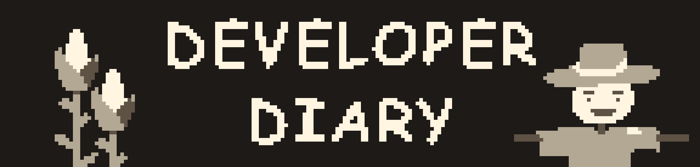

Nhật ký lập trình là nơi nhà phát triển ghi chép lại những gì mới được khám phá, các bản cập nhập và đôi khi có lời tâm sự (Dev Note).
"Cuối tuần rồi! xã(?) stress bằng cách lập trình thôi!"
"Thực ra thì mức độ khó cũng không quá khó, tạo một biến global.hardmode và đổi lại chỉ số khi global.hardmode bằng true là xong."
"Giờ mới nhận ra lập trình là phải có AI mới có thể giúp mình lập trình và phát triển ý tưởng."
Không có gì đặc biệt, sử dụng lại kiến thức đã biết để lập trình.
"Sự khởi đầu của một tập hợp các trò chơi đơn giản."